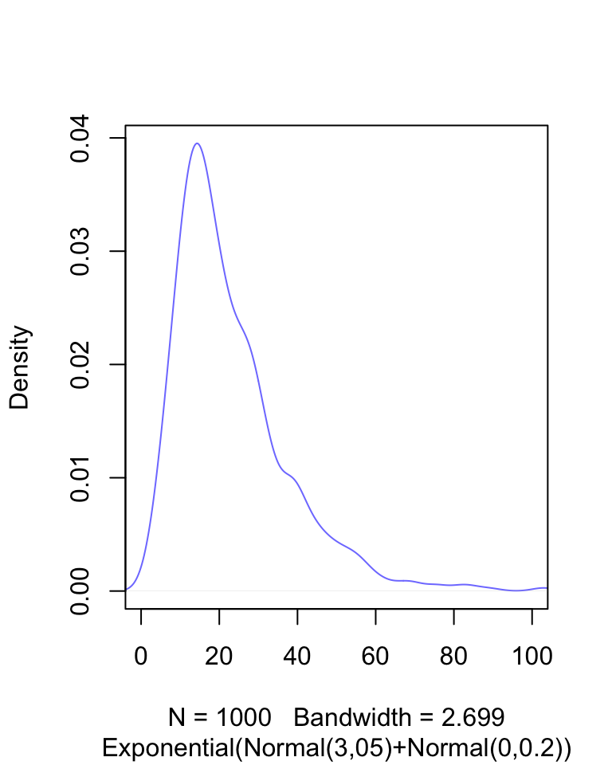
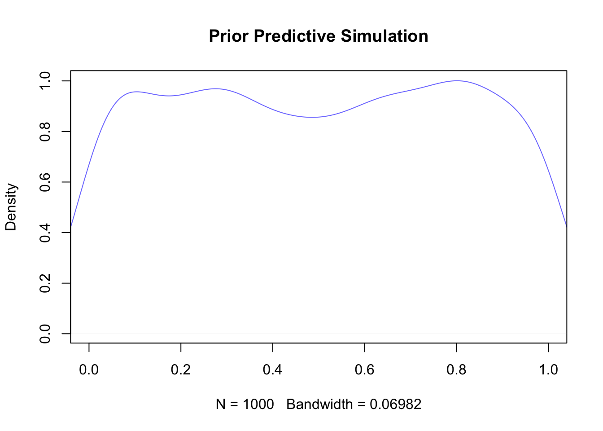
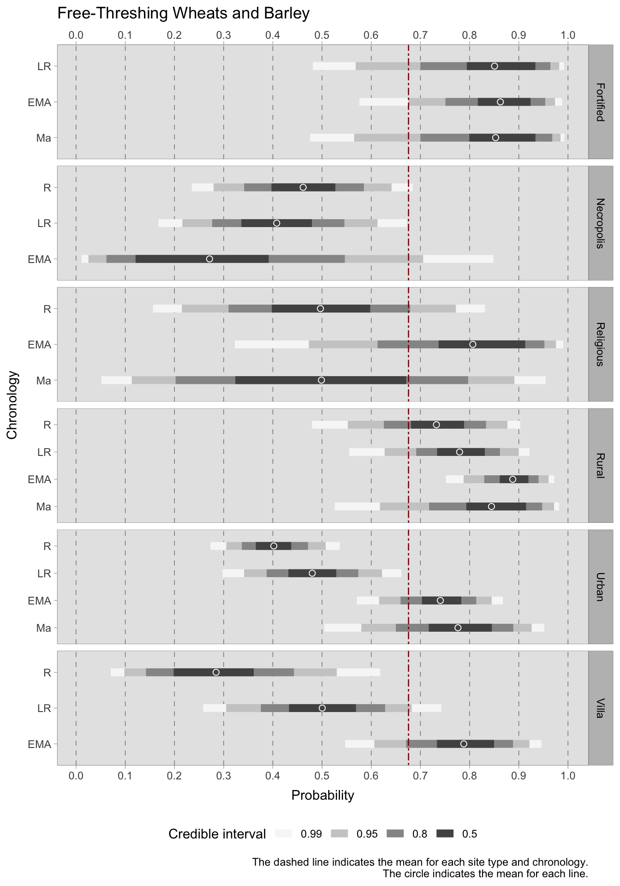
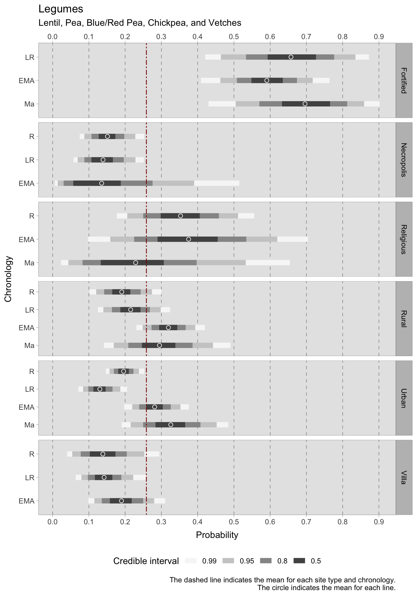
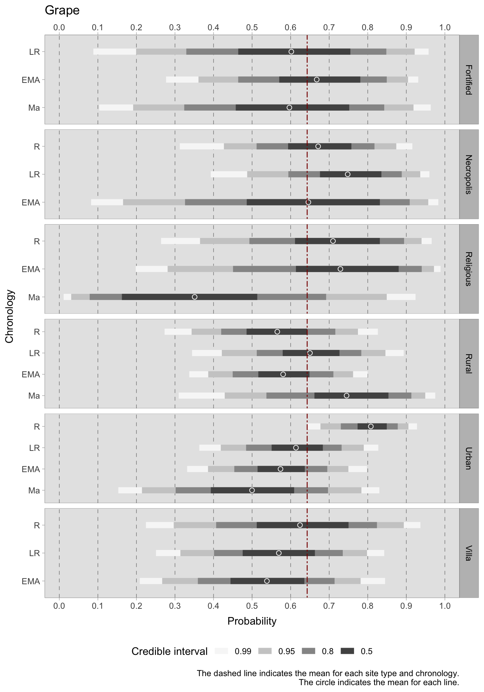
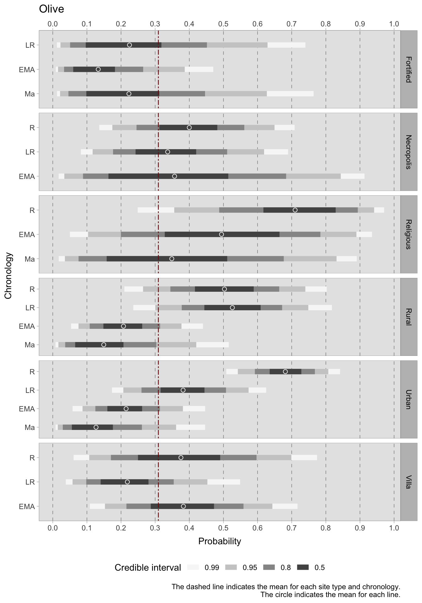
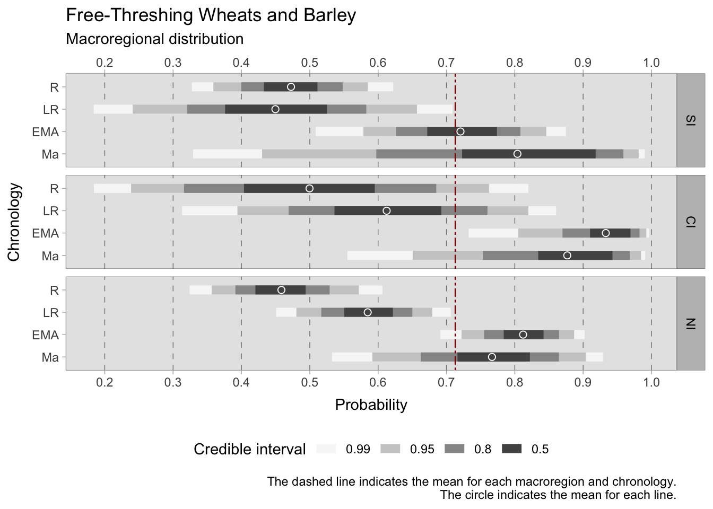
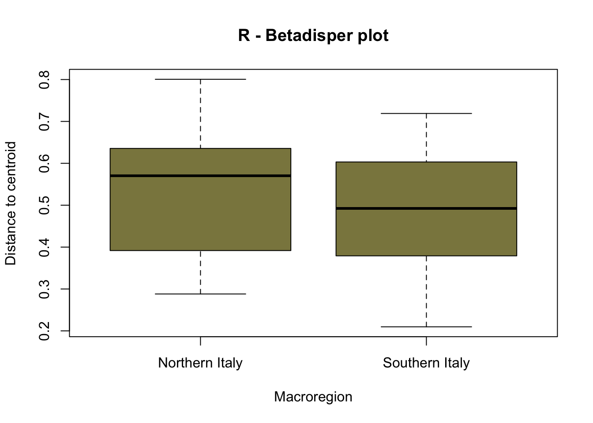
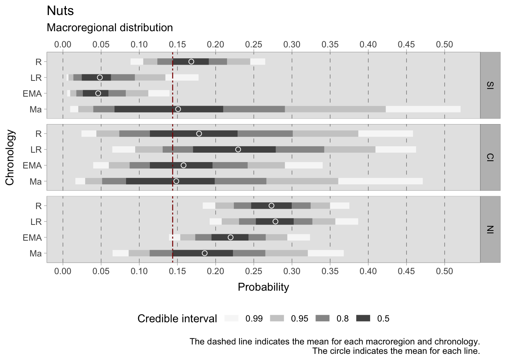
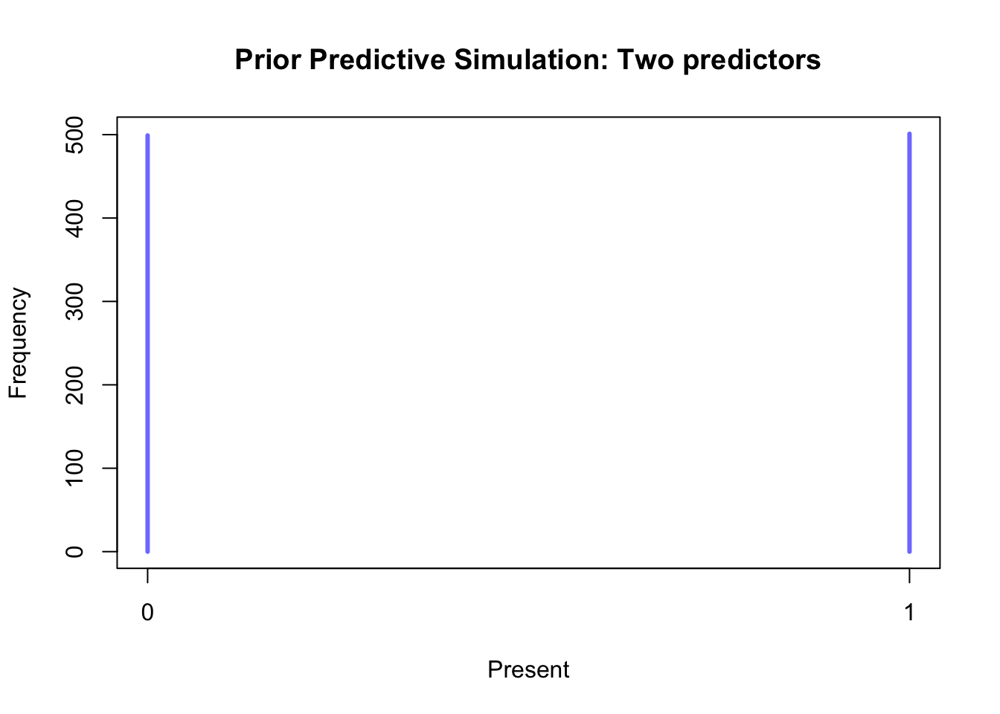

7 Archaeobotany
This chapter presents the quantitative findings based on macrobotanical data from 190 case studies used in this research. The limitations inherent in the dataset have been presented in both the materials (Chapter 3) and methods (Chapter 6) sections. In particular, the considerable presence of outliers in numerous database samples would result in unreliable results if analysed as counts, necessitating a presence/absence analysis. Plant remains serve as a valuable indicator of ancient farming practices, and a general approach to supplying relative chronological trends is provided towards the conclusion of this chapter. The results will initially be presented in temporal order, offering ubiquity scores for each century under review. For explorative purposes, ubiquity has also been computed for Southern, Central and Northern Italy. The initial qualitative interpretations of the findings and the Bayesian modelling of site richness and diversity scores prompted a thorough study, including the development of hierarchical models for each macroregion. A case study examining the prevalence of free-threshing wheats and other more rustic cereal crops in Italy in the three macroregions was also carried out, both using a frequentist approach and in the form of Bayesian hierarchical models. Additional models have been developed for all classifications of plant macroremains utilizing more predictors, such as context type, site altitude, average yearly temperature and precipitation. This chapter also presents an assessment of these models.
7.1 Ubiquity
In Chapter 6, we concluded that due to the numerous biases present in the sample, dealing with the archaeobotanical dataset warrants the use of a presence/absence analysis. One of the most prevalent types of presence/absence analyses for archaeobotanical remains is ubiquity. Technically speaking, ubiquity is a frequentist approach that only describes the presence of a particular species in a certain number of contexts. While there exist uncomplicated Bayesian substitutes, they still demand a certain degree of modelling or individual handling of each taxon purposes1. This level of detail is prohibitive for exploratory purposes. With this aim, ubiquity has been calculated (a) for each century, (b) for each Italian macroregion, stratified by chronological phase.
The heatmap in Figure 7.1 provides a good overview of the temporal trends of presence of cereals, legumes, fruits and nuts in the entire area under examination. Despite some trends are visible, it is important to remember that these results are just exploratory and they need to be compared with other predictors (i.e. context type, macroregion, etc.). The chart additionally presents the scientific names of all plants being researched, thereby allowing the usage of common English names later in this chapter.
7.1.1 Macroregional trends
In addition to investigating the ubiquity of each plant in every century, diachronic trends can also be derived by utilising the chronology and Italian sub-regions as predictive factors. This approach is only used as an initial form of data exploration, although this type of data stratification is risky with a data set that is not large enough. Sub-groups, such as Roman: Central Italy, may not be informative due to their size. It is not feasible, for example, to carry out this research at the level of centuries. To subset the data from the northern, central and southern Italian regions, the R function Ubiquity_macroreg_chrono() (Custom functions, Section 2.3) was created. In order to enhance readability of the plots, we categorized taxa into cereals, pulses, and fruits/nuts. We did not include some dataset columns, such as fruits that were only present in a few sites, in the plot.
7.1.1.1 Cereals
It is noteworthy that during the Roman age, cereals were widely found both in Southern and Northern Italy, with some exceptions (namely einkorn, rye, oats, and proso millet) possibly due to the randomness of the sampling. It is unfortunate that only three sites in Roman Central Italy provided botanical samples, and their values have subsequently been omitted from the graph. The Roman Peasant Project (Bowes, 2020) has investigated these sites in Tuscany and has found three types of cereal: free-threshing wheats, emmer wheat and barley. Comparable ubiquity figures in both northern and Southern Italy during the Roman age may imply similar production patterns throughout the Italian mainland, but more data is necessary. In the late Roman period, data on crop prevalence has been analysed for three macroregions, with southern Italy displaying the lowest reliability due to data being available for only five sites. The central Italian sites show that three crops - free-threshing wheats, barley, and emmer - are found on 62.5% of those areas. While other cereals are present, they are not as ubiquitous. The aforementioned cereal triad also shows diffusion in Southern Italy. Conversely, in the north of Italy, although free-threshing wheats and barley were important crops, they had to compete with other cereals such as millet, sorghum and rye. The latter crop witnessed a significant increase and was present in nearly 30% of the Northern sites (as opposed to the Roman 16%). The Early Medieval period appears to have marked a shift in Italian agricultural practices, leading to greater regional variability in cereal production. In Southern Italy, free-threshing wheats, barley, and emmer formed the main cereals during Medieval times. These cereals are also prevalent in Central and Northern Italy, although these regions practise polyculture with a diverse range of cereals. The small number of samples from this age is due to the projects chronological limit, which ends at the 11th century. Despite the brevity of the chronology, we can still make certain observations. Central Italy during the Medieval period heavily relied on free-threshing wheats, barley, and emmer, whereas other cereals played a more minor role. Barley is the most prevalent cereal in Northern Italy during this period, succeeded by free-threshing wheats, millets, and sorghum.

7.1.1.2 Legumes
Pulses played an important role in the diet and were grown in both northern and southern Italy during the Roman Empire. In the latter, vetch and broad beans are present in 31% and 22% of the samples, respectively, while lentils are present in 40% of the sites. During the Late Roman Age, broad beans were equally significant in Central and Northern Italy, with peas present in 50% of the Central Italian sites. In the Early Medieval Age, pulses were present in many Central Italian sites, notably blue and red peas, broad beans, and other Fabaceae. Lentils and broad beans are also cultivated in nearly half of the Northern Italian sites. The significance of pulses in Central Italy is corroborated by the 11th century samples, as each species is prevalent in over 50% of the sites and Fabaceae can be detected in every sample. Broad beans were also found in 66% of the Northern Italian sites.

7.1.1.3 Fruits and nuts
Olive and grape are two major crops grown on the Italian peninsula. It is expected that olive pits are more prevalent in Southern Italy, where they existed in over 88% of sites during the Roman era and more than 58% of sites in later chronologies2. Grape plays a significant role in the Italian peninsula, exhibiting notably high ubiquity values in Roman Southern Italy and in Late Roman Central Italy. The results for other cultivated fruits are varied, possibly because these species are present in smaller quantities in the excavations, especially when these are aimed at specific storage structures. It may therefore be more advantageous to investigate trends in fruits and nuts as a combined column, as we will do in the Bayesian models.

7.2 Site richness and diversity by chronology
Species richness is a measure used in ecology consisting simply in the counts of species found at a certain location. In archaeology, it can be informative for assessing how many different plants were found at a site. For the calculation, only sites that provided cereals, legumes, fruits and nuts have been used. Although this choice entails the loss of many observations, it was necessary in order to produce more credible and comparable results. The graphs below show extended credible intervals for groups with fewer observations.
The objective of the model was to determine the average plant diversity in each chronological sequence. A Poisson distribution was selected for the model as it is utilized when counts do not have a set upper limit (in contrast to a binomial distribution). The outcome variable is the richness (\(R_{i}\)) for each site \({i}\), calculated as follows
\[ R_{i} = \sum_{n=1}^{k} Species_{ni}\] where \(k\) represents the total number of species in a given site. The aim is to model the average richness \(\lambda_{i}\). The regression involves computing four intercepts, one for each chronology \(ChrID\), in addition to a varying slope for each observation (\(\beta_{[Observations]}\)). This will later help in quantifying the average deviation of the observations from the mean in each chronology (\(\alpha_{[ChrID]}\)). The Poisson regression formula is as follows, with weakly informative priors selected for the intercept and slope to ensure that the range of possible \(\lambda_{i}\) values stays within the outcome space:
\[R_{i} \sim Poisson({\lambda}_{i})\]
\[log {\lambda}_{i} = \alpha_{[ChrID]} + \beta_{[Observations]}\] \[\alpha_{[ChrID]} \sim Normal(3,0.5)\] \[\beta_{[Observations]} \sim Normal(0,0.2)\] The results illustrate that, within the 0.50 credible interval, the predicted species richness during the Roman and Late Roman period is approximately 9-10 species, which increase up to 12 species during the early medieval period, and between 14.5-16.5 post the 11th century; however, the credible interval is wider because of the scarce sample size. Despite their larger credible interval, even the most extreme values within the 0.99 credible interval have a minimum of 12 species, suggesting greater species richness during this period. When considering the varying effect, which illustrates the predicted deviations of each site from the mean (stratified by chronology), the samples from the 11th century onwards exhibit greater variability. Conversely, the samples from the Roman and Late Roman periods appear to form a more cohesive set of sites in relation to the number of species present. The median deviation of each site from the mean is consistently below one species in all chronologies.

In contrast to taxon richness, taxon diversity considers the abundance of each taxon. It should be noted that in this dataset, this measurement can be skewed by samples where one taxon dominates to an extreme degree. For example, a sample collected from a processing or storage area is likely to exhibit one taxon that dominates the others. Although this was the reason for choosing to work with presence or absence data in this research, diversity indices are nonetheless provided for the sake of completeness. Specifically, we have computed two indices - Shannon equitability (\(E_{H}\)) and Simpson (\(D\)) - that range from 0 (complete inequality) to 1 (maximum diversity). These calculations can be performed using the vegan ecology R package functions. Only complete observations, consisting of cereals, pulses, and fruits/nuts, were considered for the calculation of richness indices. After computing both indices for each sample, these values were modelled using a beta distribution because it is bounded between 0 and 1. The resulting equation is as follows: \[ D_{i} \sim Beta(\mu_{i}, \phi_{i})\] \[logit(\mu_{i}) = a_{[ChrID]}\] \[a_{[ChrID]} \sim Normal(0,1.5)\] \[\phi_{i} \sim Exp(0.1)+2\]

Both indices have a range of values from 0 to 1, but they differ in their calculation methods (Nagendra, 2002). Therefore, direct comparisons between the values of \(E_{H}\) and \(D\) should not be made, even when displayed in the same figure. Rather, the relative trends within each index should be considered. Although the credible intervals differ (larger for the Simpson index due to increased variability between samples), the trends in diversity across chronological groups remain similar. During the Roman period, there was a lower diversity phase, followed by a slight increase in diversity in the Late Roman period and a subsequent decrease in the early medieval period. However, diversity then increased once more in the post-11th century samples. Nonetheless, the credible interval for this group is considerable and thus the results must be interpreted with caution.
7.3 Context type
After examining the principal chronological trends for plants distribution during the first millennium, we may add another factor to our inquiry, namely site type. We can expect dissimilar plants in a funerary context than in an urban site. Stratification of the dataset by site type is possible, but there is a challenge: the four chronologies we are studying also affect the availability, frequency and economic dynamics of site types. For example, the agricultural strategies employed by rural villas during the Roman and Late Roman periods could differ based on political and economic events, which could affect the presence of certain taxa. We begin by drawing a directed acyclic graph (DAG), which illustrates how the Chronology node functions as the parent node of Site_Type, and it affects the Plant_Present value directly and indirectly through Site_Type. To account for this backdoor path, we block by Chronology and stratify the dataset by Site_Type. Since we have two categorical predictors of interest, an interaction index variable can be utilised to create separate intercepts for each chronology and context type. For instance, the Roman:Rural context type could be assigned an index of 1, while Roman:Urban could be assigned an index of 2, and so on. This interaction dummy index (\({[TCid]}\)) will determine the variation in intercepts (\(\alpha\)) across different context types. This is described in Section 6.6.1.
To assess the probability of the presence of a single or multiple taxa in each chronology and context, we opted to utilise a Binomial distribution. The \(F\) (an abbreviation for the term found) outlined on the left-hand side of the formula denotes the outcome variable - an indicator of presence/absence for the observation \(i\). If there is only one taxon, this value can either be 0 (absent) or 1 (present), with \(T\) equalling 1. This effectively makes the Binomial distribution equivalent to a Bernoulli distribution. If the model includes more than one taxon, \(T\) represents the total number of taxa being modelled. For example, in the case of free-threshing wheats and barley, the model aims to evaluate the likelihood of these grains being present at a specific site type within a certain chronology. In this instance, the value of \(T\) for noble grains is 2. The outcome variable \(F\) denotes the quantity of different noble grains discovered on a specific site \(i\), with values ranging from 0 (no grains located) to 2 (the site contains both barley and free-threshing wheats). While it deviates from typical binomial distribution usage, this modification was essential because this study is handling presence/absence statistics. The presented model is an intercept-only one, where the intercept \(\alpha\) holds an interaction index \({[TCid]}\). The model produces estimates for each context type and chronology under investigation.
\[ F_{i} \sim Binomial(T, \bar{p}_{i} ) \]
\[ logit(\bar{p}_{i}) = \alpha_{[TCid]} \]
\[ \alpha_{[TCid]} \sim Normal(0,1.5) \] The rationale behind choosing a normally distributed prior for the intercept \(a\) is that it is weakly informative. Below, a simulation of the intercept prior.

During the Roman period, free-threshing wheats and barley were primarily found on rural sites, where the predicted probability of occurrence (with a credible interval of 0.50) ranged between 0.68-0.78. The trend is positive, with an increase in predicted occurrence in later chronological phases. There is also an increasing tendency, although to a lesser extent, for urban sites and villas (at least until this type of settlement was abandoned). One site type consistently shows a strong presence of these grains from the Late Roman to the Medieval period: fortified sites (castra). Indeed, fortified settlements also exhibit a substantial presence of other types of cereal grains, including emmer, einkorn, and millets. If the average expected occurrence of more rustic grains throughout each chronology and type of site is approximately 0.31, in fortified sites, the average is about 0.65 during the Late Roman and Medieval eras and 0.59 during the Early Medieval period. In rural sites, too, minor grains increase from the Roman to the Early Medieval period, reaching a peak of 0.43 in the Medieval period and falling to 0.30 (but with a considerable credible interval) in the latest period after the 11th century. This pattern is also evident in urban and villa sites, which exhibit acceptably narrow credible intervals. However, credible intervals for religious sites, despite showing promising results, are too wide due to their small group sizes. Regarding legumes, reliable conclusions can be drawn for most site types up until the 11th century. However, the length of credible intervals for religious sites makes any major informative conclusion uncertain for this site type. Legumes appear to always be a part of the rural landscape, found in both rural sites where pulses were particularly present during the early medieval (HDI = 0.30-0.34) and medieval (HDI = 0.25-0.34) periods, as well as in rural villas. In fact, during the Early Medieval Period, probabilities increased in villas as well, with an HDI of 0.16-0.22. This trend is mirrored in urban sites as well. While probabilities during the Roman age hover below the mean of 0.25, the early Middle Ages witness a rise with an HDI of 0.25-0.30, reaching a peak in the later phase with an HDI of 0.28-0.37. This signals a notable uptick in the significance of pulses in the diet and farming. If the mean estimate of legume occurrence is consistently around 0.15 within necropoleis from the Roman to the early medieval period, then it is notable that legumes were important offerings at religious sites. During the Roman period, their significance ranged between 0.30-0.40, whereas in the early medieval period it was between 0.30-0.45. Regrettably, this group is relatively limited, and further observations are required from religious sites, as there were no late Roman samples, and the medieval samples show excessively wide credible intervals. While fortified sites display a wide credible interval in each phase, which may suggest considerable variability within the data, their 0.50 credible interval greatly surpasses the overall mean. During the Late Roman period, the HDI fluctuates between 0.59-0.73. In the Early Medieval period, the HDI is marginally lower, ranging between 0.55-0.64, before increasing again in the 11th century samples, where it ranges between 0.64-0.76. For what concerns the two primary cash crops, grapes and olives, it is challenging to draw conclusions with regards to site type and chronology as predictors. This is due to the small group sizes and variability between sites, which result in particularly broad credible intervals. In general, there are indications of a decrease in grape cultivation in both urban and rural areas. In the rural setting, however, the trend is fluctuating, with a positive turn in the late Roman era and a new decline in the early Middle Ages. With such wide credible intervals covering a significant portion of the probability space, it is probable that the data was unable to overcome the prior, leading to high uncertainty. Further data or a more informative prior (although this may introduce subjectivity) may be necessary. The olive plots have narrowed the credible intervals range slightly. During the Roman period, olives were frequently present in urban sites with a range of 0.63-0.72 (credible interval = 0.50) and religious sites with a highest density interval (HDI) ranging between 0.61 and 0.81. In rural sites, olives were also prevalent, with an estimated mean of around 0.50 in the Roman period and 0.52 in the Late Roman period. However, in later periods, there was a sharp decline in olive production. This decline commences in the Late Roman period for both urban and rural villa sites, though the latter does experience a renewed positive HDI in the early medieval period. Generally, the average occurrence of grapes (although with all the limitations imposed by such large credible intervals) is higher than that of olives. This may be attributed to numerous samples in the database coming from Northern Italy, which is less suitable for olive cultivation. The credible interval ranges for the models of nuts, i.e. hazelnuts, walnuts and chestnuts, are narrower and more informative compared to those of the grape/olives models. This implies that there is less variability in the dataset available for this category. During the Roman period, the highest HDIs for nuts are found in religious sites, necropoleis, and rural villas. However, the credible intervals for these categories are large. The estimated mean HDI for urban sites during this period is approximately 0.35, while for rural sites, it is around 0.22. During all the subsequent periods, the mean predicted occurrence remains below the overall mean of 0.31 for both types of locations, with a potential downward trend for urban sites. The group that exhibits the most significant decline is rural villas, which decreased from an average Roman estimate of 0.45 to an average of 0.09 in the early medieval era. Villas show a similar decrease in the frequency of domestic fruits (apple, fig, melon, peach, pear, plum, date), but with credible intervals of considerable size. During the Roman era, fruits were abundant in urban locations, becoming less prevalent in subsequent periods, only to rise again in samples after the 11th century. Funerary sites also exhibit high HDI averages for domestic fruits (0.23 in the Roman period and 0.28 in the late Roman period). In contrast, there is a gradual rise in the occurrence of cultivated fruits in rural areas between the Roman and Medieval eras. In addition to larger fruits, our model encompasses the consumption of different types of berries such as sour cherry, cornelian cherry, wild cherries, elderberry, blackthorn, blackberry, and strawberry. It appears that the presence of berries was ubiquitous, albeit in minor quantities. Upon closer inspection of contexts with more reliable credible intervals, a positive trend is observable in rural sites from the Roman to the Medieval era. While urban sites exhibit fluctuations, they appear to have a higher consumption of berries, with HDI values exceeding the overall mean. The trend in rural villas is less pronounced: during the Roman period there is a substantial variability that resulted in a larger credible interval, whereas the late Roman periods average is around the overall mean of 0.10. Afterwards, the average drops to 0.04. For the Roman and Late Roman period, estimated averages of 0.04 and 0.07 are identified in necropoleis, respectively.






7.3.1 Species richness in urban contexts
In addition to examining the predicted occurrence of particular plant species within the selected contextual classifications, we found it instructive to examine plant richness. Yet, as previously stated in this chapter, subsetting data based on site type results in very narrow groups that provide unreliable information. Of all the context categories, urban sites displayed the greatest frequency of sites for every chronology analysed. For this reason, and because of our specific interest in the urban garden phenomenon, we calculated the richness of plants in urban settings for each stage. To ensure accuracy, we excluded contexts that did not report all three types of plant taxa under examination - namely cereals, fruits/nuts, and legumes. This correction carries significant drawbacks because it eliminates sites where the exclusion of certain plant categories may have been intentional (such as storages). However, despite considerable fluctuations in the numbers (particularly for the 11th century CE, which comprises only two samples after the correction), the overall trend remains similar to the previous one. Plant richness slightly decreases in urban contexts after the Roman period; however, early medieval cities exhibit a higher plant richness than the Roman and Late Roman phases. In the 11th century, plant richness increases even further.
| Chronology | Richness | Samples | Richness* | Samples* |
|---|---|---|---|---|
| R | 6.5 | 44 | 8.45 | 22 |
| LR | 5.9 | 24 | 7.2 | 10 |
| EMA | 7.2 | 25 | 9.6 | 8 |
| Ma | 9 | 8 | 17.5 | 2 |
7.4 Macroregion
7.4.1 Cereals
The central focus of this chapter revolves around cereals, given their pivotal economic importance during the first millennium CE. The exploration begins with two Bayesian models that vividly depict the estimated occurrence of free-threshing wheats, barley, and other more rustic grains across each chronological phase under consideration. Moving forward, our attention shifts to the richness of cereals within each sub-region. We delve into an examination of the distances between the northern and southern Italian cereal datasets during the Early Middle Ages, presented as a compelling case study. Unlike the Bayesian models, this case study employs a frequentist approach, allowing for a comparative analysis of results obtained through distinct methodologies and perspectives. As we unravel the findings, it becomes evident that both the Bayesian models and the frequentist approach converge on the same conclusions. Despite their differing methodologies and analytical angles, the unified outcomes contribute to a comprehensive understanding of the dynamics surrounding cereal cultivation in Northern and Southern Italy during the Early Middle Ages.
7.4.1.1 Free-threshing wheats and barley
In addition to considering chronological and context type models, another important variable that has been examined in this study is Macroregion. This allows us to divide the Italian peninsula into three regions (Southern, Central, and Northern) and investigate more specific geographic questions. Due to the limited amount of data available, it is not however feasible to build on the previous model and incorporate this variable into the analysis. Additionally, including three categorical predictors would make it difficult to interpret the results. To account for the influence of Macroregion, we can stratify the dataset by Southern, Central, and Northern Italy, similar to how we stratified by Site_Type. It is important to also consider chronological stratification as different dynamics were occurring in the areas under observation. Therefore, we can block by Chronology and stratify by Macroregion to investigate the influence of geographic location on animal husbandry and consumption patterns.
The chosen distribution is a Binomial where \(F\) (short for found) on the left side of the formula is the outcome variablea presence/absence indicator for the observation \(i\). In the case of a single taxon, the value can either be 0 (for absence) or 1 (for presence) and the \(T\) is 1, making the Binomial distribution effectively a Bernoulli distribution. If the model is for more than a single taxon, the \(T\) is the total number of taxa that are being modelled. The model presented below is an intercept-only model, where the intercept \(\alpha\) carries an interaction index \({[REGid]}\) as the model will provide estimates for each macroregion and chronology under examination. For instance, Roman: Southern Italy is labelled as 1, Roman: Central Italy as 2, and so forth.
\[ F_{i} \sim Binomial(T, \bar{p}_{i} ) \]
\[ logit(\bar{p}_{i}) = \alpha_{[REGid]} \]
\[ \alpha_{[REGid]} \sim Normal(0,1.5) \] While this category is of particular importance, the interpretation of the results of this model is problematic and immediately reveals the group imbalances. The credible intervals for Northern Italy are narrow and informative, considering the usage of a weakly informative prior. On the other hand, the range of estimates for Southern and Central Italy requires careful consideration. Nonetheless, it is still possible to draw conclusions by analysing the regions of the graphs where the majority of the probability estimates are located. During the Roman period, the mean estimated probabilities of discovering free-threshing wheats and barley was similar in all three sub-regions (SI = 0.48, CI = 0.50, NI = 0.46), although the credible interval for Central Italy is quite large requiring additional archaeobotanical data to increase specificity. In the Late Roman period, the credible intervals are quite large both for Southern Italy (where the 0.50 probability region ranges between 0.38 and 0.52) and Central Italy (where the 0.50 probability region ranges between 0.53 and 0.69). Conversely, the 0.50 credible interval for Northern Italy is between 0.55 and 0.62. During the early medieval period, there was a marked increase in estimates across all three regions. Central Italy had the highest peak, ranging from 0.91 to 0.97, while Northern Italy reached 0.78 to 0.84, and Southern Italy attained 0.67 to 0.77. The smaller post-11th century dataset yields broad credible intervals, suggesting a possible positive growth in Southern Italy, while mean estimates for Central and Northern Italy reflect a minor decrease.

7.4.1.2 Minor grains
The model for minor grains in the Italian macroregion uses a Binomial distribution where \(F\) (short for found) on the left side of the formula is the outcome variablea presence/absence indicator for the observation \(i\). As there are seven types of minor grains under investigation, the binomial will take 7 as maximum (\(T\)). This model effectively shows the probability of a single site to be reliant on more rustic grains. Emmer for instance, is ubiquitous in Italy, but in many cases it is the only hulled grain found among other cereals in a context. Modelling the presence of more grains in a site can give insights on the rural economy. The model presented below is an intercept-only model, where the intercept \(\alpha\) carries an interaction index \({[REGid]}\) as the model will provide estimates for each macroregion and chronology under examination.
\[ F_{i} \sim Binomial(7, \bar{p}_{i} ) \]
\[ logit(\bar{p}_{i}) = \alpha_{[REGid]} \]
\[ \alpha_{[REGid]} \sim Normal(0,1.5) \] After examining the posterior distribution, the credible intervals reveal a striking coherence in the dataset, marked by a lack of excessive dispersion. However, Central Italy deviates as the group sizes are small, which leads to larger credible intervals. Divergent patterns among Italian sub-regions can already be observed in the Roman age. In Southern Italy, the 0.50 HDI is confined within the tight range of 0.18 to 0.21. Contrastingly, Central Italy showcases a broader span from 0.07 to 0.13, while the North falls within the range of 0.22 to 0.24. Notably, the North boasts a notably short credible interval, hinting at consistency and a substantial volume of observations. As we transition into the Late Roman period, divergent trends emerge. Southern Italy maintains a modest range of 0.08-0.12, whereas Central Italy experiences a higher amplitude from 0.17 to 0.23. The North exhibits a shift towards minor grains, reflected in an expanded interval of 0.31-0.35. Come the Early Middle Ages, both Central and Northern Italy surpass the overall mean of 0.23, with HDIs ranging impressively between 0.46-0.54 and 0.44-0.48, respectively. A growing disparity between these regions and Southern Italy becomes evident, where the HDI hovers between 0.13-0.17. Despite the broad credible intervals for post-11th-century samples, the estimated means consistently uphold the preceding trends, albeit with a subtle downward tendency.

7.4.1.3 Cereal richness in the Italian macroregions
In Section 6.3.4, detailed insights into the pre-processing of archaeobotanical data were provided, aiming to enhance the accuracy of cereal richness estimates across the three distinct Italian sub-regions. The original group sizes before this pre-processing are illustrated in Table 7.2, while Table 7.3 displays the reduced number of samples following the data processing steps. For a more granular view of the impact of data processing, Table 7.4 presents the effective count of caryopses per group, with the mean richness conveniently summarised in Table 7.5. Examining cereal presence values reveals similarities between Roman Northern and Southern Italian sites. Notably, Central Italy reports higher values, albeit caution is warranted as this observation relies on data from only three sites, rendering it less reliable. Transitioning to the Early Middle Ages, Central Italy emerges once again as the region richest in cereals, closely trailed by Northern Italy. A fascinating observation is the enduring similarity in cereal values in Southern Italy, which remain remarkably close to those recorded in the Roman age. For a comprehensive listing of Southern Italian Early Middle Ages sites, refer to Table 7.6.
| Chronology | Northern Italy | Central Italy | Southern Italy |
|---|---|---|---|
| Roman | 43 | 5 | 35 |
| Late Roman | 46 | 8 | 10 |
| Early Medieval | 42 | 10 | 17 |
| 11th c. | 12 | 4 | 2 |
| Chronology | Northern Italy | Central Italy | Southern Italy |
|---|---|---|---|
| Roman | 36 | 3 | 27 |
| Late Roman | 42 | 5 | 5 |
| Early Medieval | 39 | 10 | 13 |
| 11th c. | 12 | 4 | 1 |
| Chronology | Northern Italy | Central Italy | Southern Italy |
|---|---|---|---|
| Roman | 44483 | 164 | 28401 |
| Late Roman | 422183 | 8328 | 241 |
| Early Medieval | 473423 | 104556 | 15065 |
| 11th c. | 46764 | 37148 | 352 |
| Chronology | Northern Italy | Central Italy | Southern Italy |
|---|---|---|---|
| Roman | 2.94 | 1.67 | 2.93 |
| Late Roman | 3.76 | 3.40 | 2.60 |
| Early Medieval | 5.26 | 5.50 | 2.85 |
| 11th c. | 4.67 | 5.00 | 3.00 |
| ID | Site | Region | Geography | Type | Culture/Influence |
|---|---|---|---|---|---|
| 98 | S. Maria in Civit, D85 | Molise | Hilltop | Urban | Lombard |
| 107 | S. Giovanni di Ruoti, Phase 3A | Basilicata | Mountain | Monastery | Lombard |
| 107 | S. Giovanni di Ruoti, Phase 3B | Basilicata | Mountain | Monastery | Lombard |
| 198 | Salapia, area botteghe, US 2475 | Puglia | Coast/Lagoon | Urban | Lombard |
| 198 | Salapia, area botteghe, US 2437 | Puglia | Coast/Lagoon | Urban | Lombard |
| 199 | Salapia, area conceria, US 2054 | Puglia | Coast/Lagoon | Urban | Lombard |
| 199 | Salapia, area conceria, US 2211-2217 | Puglia | Coast/Lagoon | Urban | Lombard |
| 199 | Salapia, area conceria, 8th-9th c. | Puglia | Coast/Lagoon | Urban | Lombard |
| 196 | Faragola, wastepit 61 | Puglia | Plain | Rural, villa | Lombard |
| 196 | Faragola, wastepit 66 | Puglia | Plain | Rural, villa | Lombard |
| 234 | Colle Castellano, Phase 3-4 | Molise | Hill | Urban | Lombard |
| 177 | San Vincenzo al Volturno, kitchen area | Molise | Hill | Monastery | Lombard |
| 101 | Supersano, loc. Scorpo | Puglia | Plain | Rural | Byzantine |
| 250 | Apigliano, 9th-10th c., pits | Puglia | Plain | Rural | Byzantine |
| 250 | Apigliano, 10th-11th c., pits | Puglia | Plain | Rural | Byzantine |
| 196 | Faragola, granary A7 | Puglia | Plain | Rural, villa | Lombard |
| 196 | Faragola, granary A8 | Puglia | Plain | Rural, villa | Lombard |
7.4.1.4 Assessing the difference
In order to substantiate the proposed shift in cereal farming during the Early Medieval period, as discussed in both Section 7.1.1 and Section 7.4.1.3, statistical validation is needed. Given the non-unimodal nature of the data and the use of presence/absence analysis, a robust choice is the application of a non-parametric test, such as PERMANOVA, on the Early Medieval botanical dataset. Before subjecting the data to the PERMANOVA analysis, it underwent the pre-processing steps outlined in Section 6.3.4. To establish a baseline for comparison, the same PERMANOVA procedure was applied to the Roman dataset.
The code snippet provided below demonstrates the utilisation of the adonis2() function to perform the PERMANOVA calculation:
# Example of how to use the function adonis()
1set.seed(29)
Permanova.Cereals.R = adonis2(
2 Bot_PA_data.R ~ Macroregion,
data = Bot_PA_categ.R,
3 permutations = 10000,
4 method="jaccard"
)- 1
- In order to get the same results, we set a seed.
- 2
- Formula specification.
- 3
- Number of random permutations.
- 4
- Distance metric.
| Phase | R2 | p-value |
|---|---|---|
| Roman | 0.03 | 0.0977902 |
| Early Medieval | 0.10 | 0.0001000 |
PERMANOVA analysis was performed on the Roman dataset using the variable Macroregion, indicating a lack of statistical significance in the calculated p-value, implying homogeneity in the dataset. However, the early Medieval dataset showed highly significant results (0<p<0.001) with 99.99% confidence. Due to insufficient samples from Southern Italy, PERMANOVA was not conducted on the Late Roman dataset. To verify the statistical significance of the PERMANOVA outcomes obtained using the EMA dataset, it is critical to ensure that the underlying assumptions are fulfilled, especially given our small sample sizes. We first examine the homogeneity of variances, determining the distances between group samples and centroids using the betadisper() function in the vegan package. If the variance is consistent, we accept the null hypothesis of no variation in dispersion between groups. To verify the statistical significance of the PERMANOVA outcomes obtained using the EMA dataset, it is critical to ensure that the underlying assumptions are fulfilled, especially given our small sample sizes. To assess variance, we can employ analysis of variance (ANOVA).
| Phase | Northern Italy | Southern Italy |
|---|---|---|
| Roman | 0.53 | 0.48 |
| Early Medieval | 0.37 | 0.38 |
| Phase | p-value |
|---|---|
| Roman | 0.1892284 |
| Early Medieval | 0.9374030 |




The graphical representation through betadisper() plots (Figure 7.16) illustrates a comparable distance from centroids for both Northern Italy and Southern Italy categories. Complementing this visual analysis, the ANOVA on betadisper() affirms the lack of significance (p-value exceeding the threshold), indicating homogeneity in group dispersions (Table 7.9). This robust statistical foundation leads us to confidently affirm the results obtained from the PERMANOVA analysis, supporting the conclusion that there is a significant difference between the two groups of sitesSouthern and Northern Italyspecifically in the realm of cereal farming during the Early Middle Ages.
Conversely, when the same tests were applied to Roman sites, the outcomes failed to delineate a significant separation between the two groups. This corroborates the notion that, during the Roman age, there was not a noteworthy difference in the types of cereals cultivated between Northern and Southern Italy.
7.4.1.5 Quantifying the separation: nMDS
In the investigation of the Northern and Southern Italian early medieval cereals dataset (Section 7.4.1.4), an additional approach involves quantifying the distance between groups of sites for both the Roman and Early Middle Ages. For this purpose, the chosen dimensionality reduction algorithm is the non-metric multidimensional scaling (nMDS) available in the vegan library for R. A detailed explanation of this algorithm is provided in Section 6.3.3.2.1. The code snippet provided below exemplifies the utilisation of the metaMDS() function to perform the nMDS.
- 1
- Again, we set a seed because these computations are random.
- 2
- We choose the dataframe on which to perform the nMDS.
- 3
- The number of dimensions chosen, in this case 1.
- 4
- Distance metric.
To ensure the integrity of computations and avoid potential fallacies, the macroregion Central Italy and the chronologies LR (Late Roman) and Ma (11th century onwards) have been excluded from this analysis. This cautious approach is taken due to the uneven distribution of the group of samples. The nMDS has been executed with a reduction to a single dimension, leveraging KDE plots for effective visualization of results. Reducing the dimension to one facilitates distance calculations. In Figure 7.17 (a), the nMDS results for the Roman cereals presence/absence dataset are presented. As previously highlighted, the non-significant outcome of the PERMANOVA aligns with the shorter Wasserstein distance, as calculated using the wasserstein1d() function from the transport library. Both chronologies exhibit an overlap in the curves, with the Roman age displaying a more substantial overlap, indicative of higher similarity within the group of samples. The EMA groups overlap (Figure 7.17, b) can be attributed to the fact that the presence of free-threshing wheats and barley is not exclusive to Southern Italian sites; these grains are prevalent in the North as well. The key distinction lies in the South, where noble grains are not cultivated in tandem with other grains. The graph for the EMA chronology reveals a clearer separation of macroregional groups, with minor overlaps. Additionally, the graph highlights variability in the Northern Italian dataset, a characteristic further underscored by outliers in the boxplots in Figure 7.17.


7.4.2 Legumes
After comprehensively examining the presence and richness of cereals, our focus now turns towards the scrutiny of legume distribution across the three Italian sub-regions, stratified by chronology. While we will not go into the technical details of constructing this hierarchical model, the methodology is the same as that described above for cereals, using identical predictors and priors. A clear trend is illustrated in the accompanying figure (Figure 7.19). As per the chronologies, Northern Italy persistently exhibits the most reliable credible intervals, with Southern Italy (except the 11th century samples) closely following suit. Conversely, Central Italy displays wider ranges, indicating greater uncertainty in the estimates. From the Roman period (mean = 0.15) to the early medieval and medieval period (means = 0.30/0.29), the estimated means rise in the north. There is a marked decrease from the Roman (mean = 0.24) to the late Roman (mean = 0.09) era in southern Italy, followed by an increase during the early medieval (mean = 0.23) and medieval (mean = 0.37, though with an HDI varying between 0.29-0.46). Similarly, the central Italian area demonstrates a steady increase in legumes farming, with a mean of 0.19 in the Roman epoch and reaching its peak at 0.60 in the 11th century samples (though with a 0.50 credible interval spanning from 0.55-0.66). The importance of legumes in this sub-region aligns with expectations, considering the hilly landscape and the historical agricultural focus of this area.

7.4.3 Fruits
Binomial models have been systematically developed for a range of fruit categories, following the same logical approach used in other macro-regional models and utilizing the same priors. The models specific formulas are not repeated here, but they are in line with the established methodology. The results for the two most important cash crops, grapes and olives, are of particular interest. The analysis reveals considerable variability in the findings for these crops, denoting a degree of uncertainty in the estimates. The scope of our investigation is not limited to marketable crops, as we have also assessed the diversity of wild and domestic fruits and nuts, providing an in-depth exploration of heterogeneous fruit categories across Italian sub-regions and over different time periods.
7.4.3.1 Grape
The models assessing the occurrence of grapes exhibit notable dispersion, leading to large credible intervals. Basing our interpretation on the 0.50 HDIs, in the Roman period, grapes were markedly more prevalent in the southern regions (0.76-0.85), aligning with expectations given their warmer climates and longstanding tradition of grape cultivation. Central Italy also displayed widespread cultivation, albeit with a larger interval (0.61-0.82). The North showed a notable presence as well, with an HDI ranging between 0.62-0.72. However, in the Late Roman period, credible intervals expanded significantly, especially in Southern and Central Italy. In the South, there was a substantial decrease in the HDI, ranging between 0.32 and 0.50. Contrastingly, Central Italy displayed an HDI in a higher probability range, spanning between 0.72-0.86. In the North, the range remained similar to the previous phase, with an estimated mean around the overall mean of 0.65. Transitioning to the Early Medieval phase, the occurrence of grapes experienced a renewed increase in the South (range: 0.50-0.65). However, Central Italy and the North witnessed a decline in their HDIs. Particularly in Northern Italian samples, the estimated mean (0.60) dropped below the Roman maximum of 0.66. Notably, the North demonstrated minimal variation in means across the four phases, with the 11th-century samples returning a mean of 0.65. In Southern and Central Italy, broad credible intervals limit the provision of valuable information.

7.4.3.2 Olives
Similar to grapes, the models for olive occurrence present credible intervals of notable magnitude, posing challenges to reliable interpretations. Relying on the 0.50 HDIs for insights, discernible trends emerge. Notably, a pronounced distinction between the South and North of Italy is evident, primarily attributed to climatic factors, as will be further elucidated in subsequent models within this chapter. In the Roman period, the HDI for the South ranges between 0.83 and 0.90, underscoring a robust presence of olives. In contrast, the North displays a considerably lower HDI of 0.30-0.40, reflecting a lesser prevalence. The scarcity of sites in Roman Central Italy results in a broad 0.50 HDI (0.46-0.70), and the 0.99 credible interval for this region is exceptionally dispersed (0.12-0.91), rendering it unreliable. Moving to the Late Roman period, the HDIs remain expansive, especially for the Southern (0.59-0.77) and Central (0.50-0.71) regions. In the North, however, the range narrows to 0.19-0.25, suggesting a more consistent pattern. As we transition to the Early Medieval period, the presence of olives diminishes across all regions, with the HDI ranging between 0.50-0.65 in the South, 0.17-0.31 in the Center, and 0.05-0.1 in the North, where the dataset is more coherent and substantial. The declining trend persists in the post-11th-century samples, although this period exhibits increased variability across sites.

7.4.3.3 Nuts
The model examining archaeobotanical remains of nuts does not show very large variations across various regions and chronological phases. In the Roman period, the estimated occurrence of nuts in the Southern regions spans from 0.14 to 0.19. Central Italy presents a challenge for interpretation due to an extremely large credible interval, which in the highest density region ranges from 0.11 to 0.26, indicating substantial uncertainty in the estimates. Moving to the Northern regions, a relatively narrower range is observed, with an estimated occurrence between 0.24 and 0.30. Transitioning to the Late Roman period, the Southern regions witness a decline in the presence of nuts, with an estimated range dwindling to 0.03 to 0.06. In Central Italy, a broad credible interval persists, spanning from 0.17 to 0.28. Meanwhile, the Northern regions maintain a similar estimated range as observed in the Roman phase, hovering between 0.25 and 0.30. As we move into the Early Medieval period, the South sees a continuity in the occurrence of nuts, remaining relatively consistent with the Late Roman phase. In Central Italy, the estimated range shifts to 0.11 to 0.19. Northern Italy reports an estimated range of 0.19 to 0.24, suggesting a slight fluctuation. In the 11th century, the Southern and Central regions exhibit very large credible intervals, rendering the estimates less reliable. However, the estimated mean aligns closely with the overall mean of 0.15 in both regions. The North, on the other hand, reports an estimated range of 0.14 to 0.23, suggesting a persistence of nut presence in this phase.

7.4.3.4 Domestic and wild fruits
The model for the occurrence of domestic fruits performed better than the previous fruits models. In Southern Italy during the Roman period, the probability of domestic fruits being present ranges from an estimated 0.19 to 0.24 with a 0.50 credible interval. In the Roman Centre, it is estimated that the presence of domestic fruits was more modest, with estimates ranging from 0.03 to 0.07. During the Late Roman era, there was a decline in the occurrence of domestic fruit in the Southern regions, which was approximately estimated between 0.04 to 0.07. In contrast, there was a mild improvement in domestic fruit presence in the Late Roman Centre which estimated to range from 0.05 to 0.09. Meanwhile, the North sustained a similar range as the previous phase, which was between 0.14-0.16. Moving into the Early Medieval period, the Southern region continues to exhibit domestic fruit occurrences, ranging from 0.06 to 0.09. In the Early Medieval Centre, a similar presence is noted, with estimates ranging from 0.04 to 0.07. The Northern region reports domestic fruit occurrences, with estimates between 0.12 and 0.14. By the 11th century, the Southern region sustains its presence of domestic fruit, estimated to be between 0.07 to 0.17. Central Italy also sees continued occurrences, with estimates ranging between 0.09 and 0.17. In the North, there is a significant presence of domestic fruits observed, with estimates ranging from 0.20 to 0.26. It is noteworthy that the larger HDIs during this phase are due to a smaller number of observations, thereby introducing increased uncertainty.
The berries model demonstrates a minor dietary impact from these predominantly wild fruits during the 1st millennium CE. One notable trend is discernible, whereby Southern and Central Italy exhibit lower HDIs falling below the mean of 0.07 from the Roman phase through the Early Medieval period. Reliable results, attributed to smaller HDIs, indicate a consistent range between 0.09 and 0.16. The small presence observed in this area is in contrast to the consumption pattern observed in Northern Italy. Upon further investigation into the 11th century, a clear increase in the presence of berries can be seen across all sub-regions. In the Southern territories, HDIs increase from 0.03 to 0.09, reflecting a higher density of berry findings. Central Italy shows an increase in the prevalence of berries, reaching HDI values between 0.07 and 0.14. In contrast, Northern Italy experiences the largest growth, with HDI values peaking between 0.27 and 0.34, indicative of a significant surge in the utilization of berries during this period. In contrast, Northern Italy experiences the largest growth, with HDI values peaking between 0.27 and 0.34, indicative of a substantial rise in the utilisation of berries during this period.

7.5 Altitude
The probability of the occurrence of the most prevalent cereal remains can be modelled against site elevation in the four time periods examined. The distribution of archaeobotanical remains across sites is uneven. During the Roman age, the majority of investigated sites are situated between 0 and 100 MSL. However, there is a rise in the number of sites at higher elevations in the subsequent phases. Though this may indicate a change in settlement patterns, it is not the focus of this study. Nonetheless, mapping the distribution of sites according to elevation could yield valuable information. Due to the time consuming nature of the process, it was not possible to produce elevation models for all the plants surveyed. Therefore, we selected only those plants that showed susceptibility to altitude-based positive or negative effects or were economically significant. Cereal crops were given priority. As not all cereals are suitable for cultivation at high altitudes, it was considered more appropriate to model them independently instead of categorising them into noble and minor grains. For reference, the breakdown of site elevations studied during the four chronologies can be found in Figure 7.25.
7.5.1 Model specification and priors
The previous models used an interaction index since we were dealing with categorical variables. However, in this scenario, we have a categorical and numerical variable as we focus on the impact of altitude on plant presence. The DAG for this case still displays Chronology as a collider, similar to the prior situation. Certainly, time period affects both the likelihood of a plants existence and the elevation of sites. As demonstrated in Figure 7.25, the spread of sites varies among different chronological phases. It is unclear if this is an actual pattern or just one present in our data, but we must make chronology adjustments.
Creating a Bayesian hierarchical model to predict the presence of a particular cereal taxon at different elevations is comparable to the binomial models discussed earlier. Since we are only modelling individual taxa, we are dealing with a Bernoulli distribution (in which the number of trials is fixed at 1). Furthermore, we intend to stratify the models by chronology, just as we did previously. For this purpose, we introduce two parameters: a varying intercept \(\alpha\) that carries the chronology index \({[ChrID]}\) (i.e. Roman = 1, Late Roman = 2, etc.), and a slope \(\beta\) that is multiplied by the elevation of the \(i\)-th site \(Alt_{i}\). The slope parameter is included to ensure that a change in elevation is reflected in the predicted probability. Both parameters have a weakly informative prior (with a mean of 0 and a standard deviation of 1.5) introduced to make the possible outcomes (present/absent) equally likely in the absence of data. The prior predictive simulation in Figure 7.27 visually demonstrates the effect of these priors, with probabilities piling up on both 0 and 1. The figures can be interpreted in a comparable manner to the previous ones, which did not incorporate numerical predictors. The x-axis displays elevation expressed in kilometers, while the y-axis presents the probability of discovering a distinct cereal. Similar to previous plots, estimates can be identified across various credible intervals, where wider intervals convey greater uncertainty in the estimation (owing to limited sample sizes or prominent variability in the data observed). For example, it is evident from each plot that the credible interval widens with increasing elevation. In fact, most of the sites examined in Figure 7.25 are situated at lower elevations. The 0.50 HDI, which provides the most reliable probability range, is represented by the darkest shade in the middle of the curves. The following formula shows the components of this model, where the mean probability \(p_{i}\) is modelled by a logit link:
\[ P_{i} \sim Bernoulli(\bar{p}_{i}) \]
\[ logit(\bar{p}_{i}) = \alpha_{[ChrID]} + \beta_{[ChrID]}\cdot Alt_{i} \]
\[ \alpha_{ChrID} \sim Normal(0,1.5) \]
\[ \beta_{ChrID} \sim Normal(0,1.5) \]

7.5.2 Cereals
As planned, we concentrated on modelling the presence of particular types of cereal at varying elevations and chronological phases. This decision was influenced by our interest in economically significant plants and the fact that certain cereal species, such as rye, are more resilient to low temperatures. This makes elevation a crucial factor in farming strategies. The models are classified based on chronology and varying elevations, while acknowledging the significance of certain cultural factors such as geographical area and context type. However, these are not taken into account as having an excessive number of subsets with a relatively small dataset poses a risk. Therefore, we can examine the estimated patterns throughout the entire peninsula. Free-threshing wheats, which are likely the most cultivated cereals in Italy, demonstrate a robust presence in all four chronological phases at any altitude, with the likelihood of their occurrence gradually increasing towards the early middle ages. It is evident that there is no noticeable trend in the prediction curve, and there appears to be no correlation between site elevation and this cereal taxon. Whether it was cultivated everywhere or imported, it is impossible to determine with this dataset. However, the mere presence of this information remains significant. On the contrary, barley displays more compelling patterns unlike free-threshing wheats. During the Roman period, and particularly in the Late Roman era, there is a notable correlation between the presence of barley and a heightened elevation quota. If the estimated occurrence at sea level is approximately 0.4 (which is still a significant contribution), at around 1100-1200 MSL the prediction increases to a probability of 0.90. This correlation appears to remain strong during the early medieval period, with probabilities ranging from 0.70 (at sea level) to 1. The high probabilities also reflect the significance of this cereal in early medieval agriculture. Conversely, in the samples after the 11th century, the curve seems to be flat, suggesting no correlation and exhibiting greater uncertainty in the data. Additionally, the small sample size is apparent in the graph, which terminates predictions at approximately 450 MSL due to a lack of available data beyond that altitude (refer to Figure 7.25). There is a chronological shift evident in the estimated probabilities for emmer, although during the Roman and Late Roman periods there is higher uncertainty due to wide HDIs, particularly at high elevations. The estimated means during these two phases imply no correlation, however their credible intervals allow for the possibility of positive or negative trends at higher elevations. In the early Middle Ages, the correlation between the increase in more rustic grains (particularly in the North where some sites are located at higher elevations, see Figure 3.8) and a higher probability of discovering emmer appears to be positive. The correlation remains only marginally positive in the subsequent phase. However, as previously mentioned, the model ceases predictions at 450 MSL. Similarly to emmer, the posterior predictive simulations for einkorn display significant ambiguity at any stage, particularly beyond 300 MSL. During the Roman period, emmer seems to have been present at greater frequencies in higher altitude sites, while the curves remain flat in subsequent phases, as indicated by the 0.50 HDI. The only visible change is the higher probabilities in the early medieval era. The model for rye produced some interesting results. During the Roman era, the chances of discovering rye on a particular site are minimal, with a slightly higher likelihood at greater elevations. In the later Roman period, the likelihood of identification even at sea level rises, displaying an upward trend on sites located at high elevations, albeit accompanied by greater ambiguity (owing to the limited number of locations at high altitudes). During the early medieval period, rye was found to have a higher probability of growth at sea level with a strong positive correlation to higher altitudes, where it became more established. The correlation was observed to be flat in post-11th century samples. However, this data is unreliable as the HDI values are very large and should not be considered. It is more challenging to identify potential patterns in the graph of broomcorn and foxtail millets beyond the Roman phase. In the Roman era, millets were more likely to be found at sea level, with a mean probability of 0.35 and a 0.50 HDI indicating a 0.10-0.25 probability around 1200 MSL. While this particular phase shows a slightly negative trend, the overall probabilities of discovering millets increase in subsequent phases without any apparent correlation to altitude. Only in the post-11th century samples, where the HDI is high, does the negative trend re-emerge. Regarding the final cereal evaluated, sorghum, its presence during the Roman and Late Roman periods is scarce, making it difficult to establish any correlation. During the early medieval period, its presence increases and, at sea level, the mean probability is approximately 0.20; however, this probability lessens as altitude increases (having an absolute low of 0 at 1200 MSL). Sorghum is more prevalent in 11th-century samples (mean = 0.40), nevertheless, uncertainty remains high. Although there are wide credible intervals, this phase still indicates a negative correlation. The uncertainty primarily stems from the small sample size rather than the variability in the observed data.

7.5.2.1 Community plot
Upon evaluating the impact of elevation changes on each taxon, their posterior distributions have been plotted together on a graph. The x-axis, representing the inverse logit probability of occurrence, provides a user-friendly interpretation within the confines of a standard probability space bounded between 0 and 1. On the other hand, the y-axis unfurls the estimated slope parameter (\(\beta\)), a varying parameter of our model that has been multiplied with the altitude of each site. This graphical representation not only aids in visualising our findings but also facilitates the comprehensive evaluation of cereals presence. This approach allows to assess positive or negative correlations within our graph. Furthermore, the graph illuminates the substantial variability in estimating the probability of certain taxa being present, echoing the broad HDIs observed in earlier plots. The graph illustrates that the most significant correlations and variations occurred during the early medieval period. A discernible positive correlation emerges between higher sites and the presence of free-threshing wheat, barley, rye, and emmer. Contrarily, altitude exhibits a negative correlation with sorghum presence. As we transition to medieval samples from the 11th century onwards, the narrative becomes nuanced, marked by high uncertainty: point clusters hover both above and below 0.

7.5.3 Legumes
Instead of creating separate models for each type of legume, an individual model has been developed for several legumes since they can be grown under similar conditions. This model uses a Binomial distribution instead of a Bernoulli distribution, as the number of legumes under examination - lentil, pea, blue/red pea, chickpea, and vetches (common vetch, faba bean, Vicia sp.) - is fixed at 7. The model was built using a formula that slightly modifies the Bernoulli distribution: \[ F_{i} \sim Binomial(7, \bar{p}_{i} ) \]
\[ logit(\bar{p}_{i}) = \alpha_{[ChrID]} + \beta_{[ChrID]}\cdot Alt_{i} \]
\[ \alpha_{ChrID} \sim Normal(0,1.5) \]
\[ \beta_{ChrID} \sim Normal(0,1.5) \]
The impact of altitude on the discovery of legumes appears to be mild, displaying a slight decreasing trend during the Roman era and a minor positive upturn in the Late Roman and early Medieval periods. Nonetheless, there is a more pronounced association in samples from the 11th century, albeit restricted to 450 MSL, which prevents comprehensive analysis.
7.5.4 Grapes and olives
The altitude models for fruits have solely focused on grapes and olives, the two cash crops of interest. Negative correlations with altitude were observed in both models. For grapes, the probabilities at sea level are similar in the Roman and Late Roman periods, exceeding 0.75. In subsequent phases, they fall slightly below 0.75. During the first two periods, the probabilities sharply decline upon reaching the 1200 MSL, while in the early medieval period, the decrease is less intense. It is important to note that these models only consider the presence of plant remains. It would be informative to observe the abundance of these remains at different elevations if a sufficiently robust dataset is available. The trend in the 11th century samples does not exhibit any correlation; however, the prediction only extends up to 450 metres above sea level, which would not significantly impede vine cultivation. Similarly, the olive model shows a marked decrease in predicted probabilities at higher altitudes during the Roman and Late Roman periods. The early medieval dataset still shows a negative correlation, but with a higher uncertainty. For grapes, the medieval samples show no correlations because there are no observations at high altitudes. In fact, olive trees can thrive within the range of altitudes offered by this chronological phase (0-450 MSL).

7.6 Model comparisons
In the concluding remarks of Section 6.6.2, the significance of model comparison when conducting Bayesian modelling was emphasised. So far, categorical predictors have predominantly been employed in models to draw different causal inferences, but numerical predictors are also usually utilised to evaluate the extent to which a predictors presence improves the models fitness. Indeed, adding further predictors can result in overfitting, leading to certain metrics (such as WAIC, pWAIC, etc.) penalising models with more predictors when comparing them. Farms can accommodate various animals in various climatic conditions, but plants are more vulnerable to external factors. Therefore, in addition to altitude, we included predictors such as average yearly precipitation and temperature. Different models have been developed, with various combinations of predictors, following the common procedure of starting with one predictor and progressively adding more. The aim is to determine whether some variables are more effective in predicting the presence of specific plants than others. For example, we can investigate whether the presence of free-threshing wheat in the sites is influenced more by the yearly rainfall, temperature, or altitude. These figures were derived from 1 km spatial resolution rasters using contemporary climatic data (Fick and Hijmans, 2017). While climatic fluctuations existed during the first millennium, these models are among the most accurate datasets obtainable.
7.6.1 Precipitation
The presence of plants in a particular region may be influenced by the amount of rainfall. Sorghum and millets are examples of cereals that are tolerant to drought, while olives are among the fruits that are particularly resistant. Our study aimed to investigate whether increased rainfall has an impact on the presence of certain plant species. To assess the efficacy of this variable in elucidating the presence of specific plant taxa in comparison to altitude, our approach involved constructing hierarchical models. The first Bernoulli model incorporated a varying effect for each chronology, following the previously established practice of introducing an index \([ChrID]\) to the intercept \(\alpha\). Additionally, we incorporated a varying slope \(bPrecip\)also contingent on the index \([ChrID]\)to capture the variability across different subsets. This slope is then multiplied by a constant \(MeanAnnualPrecip_{i}\), representing the standardised mean annual precipitation for each site. Both \(\alpha\) and \(bPrecip\) were then assigned weak priors.
\[ P_{i} \sim Bernoulli(\bar{p}_{i}) \]
\[ logit(\bar{p}_{i}) = \alpha_{[ChrID]} + bPrecip_{[ChrID]}\cdot MeanAnnualPrecip_{i} \]
\[ \alpha_{[ChrID]} \sim Normal(0,1.3) \]
\[ bPrecip_{[ChrID]} \sim Normal(0,1.3) \]
The second model was previously introduced in the altitude section of this chapter, but is being presented again for comparison purposes. This model utilises site altitude \(Alt_{i}\) as its sole predictor, stratified by chronology:
\[ P_{i} \sim Bernoulli(\bar{p}_{i}) \]
\[ logit(\bar{p}_{i}) = \alpha_{[ChrID]} + bAlt_{[ChrID]}\cdot Alt_{i} \]
\[ \alpha_{[ChrID]} \sim Normal(0,1.3) \]
\[ bAlt_{[ChrID]} \sim Normal(0,1.3) \] We subsequently include both altitude and mean annual precipitation in a third model to examine whether the addition of both predictors enhances the fit significantly:
\[ P_{i} \sim Bernoulli(\bar{p}_{i}) \]
\[ logit(\bar{p}_{i}) = \alpha_{[ChrID]} + bAlt_{[ChrID]}\cdot Alt_{i} + bPrecip_{[ChrID]}\cdot MeanAnnualPrecip_{i} \]
\[ \alpha_{[ChrID]} \sim Normal(0,1.3) \]
\[ bAlt_{[ChrID]} \sim Normal(0,1.3) \]
\[ bPrecip_{[ChrID]} \sim Normal(0,1.3) \]

However, our findings suggest that including the average annual rainfall as a predictor did not have a significant impact on model fitness. When comparing the three models using the WAIC measure3, no significant difference was observed:
WAIC SE dWAIC dSE pWAIC weight
m_Cwheat_precip 274.78 12.76 0.00 NA 7.09 0.76
m_CWheat_precip_alt 277.94 13.15 3.15 1.90 9.13 0.16
m_CWheat_altitude 279.32 13.53 4.54 5.23 6.05 0.08Although we have only shown the free-threshing wheats models for simplicity, we have created models for various other plants, including non-cereal plants, and found no significant impact of mean annual precipitation on the model. It should be noted that our analysis employs presence/absence measures. While this variable may be beneficial in predicting crop output, it is not appropriate for this particular data conversion. As the disparities are negligible, selecting the optimal predictor is subjective and based on what we consider to be a more relevant factor in explaining historical agricultural phenomena. Therefore, we will rely on altitude.

7.6.2 Temperature
In contrast to the precipitation models, models that utilise the standardised mean annual temperatures as a predictor exhibited diverse results. For each plant that is known to be more vulnerable to extreme temperature conditions or valuable plants, three models were developed. The models specifications remain identical to those presented in the preceding section. The first model utilised temperature (\(MeanAnnualTemp_{i}\)) as the sole predictor, stratified by chronology (\([ChrID]\)):
\[ P_{i} \sim Bernoulli(\bar{p}_{i}) \]
\[ logit(\bar{p}_{i}) = \alpha_{[ChrID]} + bTemp_{[ChrID]}\cdot MeanAnnualTemp_{i} \]
\[ \alpha_{[ChrID]} \sim Normal(0,1.3) \]
\[ bTemp_{[ChrID]} \sim Normal(0,1.3) \]
The second model is the altitude model that we have already presented before, and is used as a baseline for comparison:
\[ P_{i} \sim Bernoulli(\bar{p}_{i}) \]
\[ logit(\bar{p}_{i}) = \alpha_{[ChrID]} + bAlt_{[ChrID]}\cdot Alt_{i} \]
\[ \alpha_{[ChrID]} \sim Normal(0,1.3) \]
\[ bAlt_{[ChrID]} \sim Normal(0,1.3) \] Finally, the last model uses two predictors (in addition to chronology), namely site elevation and standardised mean annual temperature:
\[ P_{i} \sim Bernoulli(\bar{p}_{i}) \]
\[ logit(\bar{p}_{i}) = \alpha_{[ChrID]} + bAlt_{[ChrID]}\cdot Alt_{i} + bTemp_{[ChrID]}\cdot MeanAnnualTemp_{i} \]
\[ \alpha_{ChrID} \sim Normal(0,1.3) \]
\[ bAlt_{[ChrID]} \sim Normal(0,1.3) \]
\[ bTemp_{[ChrID]} \sim Normal(0,1.3) \]
Given that the models are identical to those created for the precipitation variable, we do not reproduce the prior predictive simulations.
The investigation into models for free-threshing wheat, rye, legumes, and grape indicates that incorporating an additional predictor does not appear to be warranted. The current models for each of these crops adequately capture the relevant dynamics and trends associated with their respective occurrences.
WAIC SE dWAIC dSE pWAIC weight
m_Cwheat_temperature 278.63 14.34 0.00 NA 7.87 0.51
m_CWheat_altitude 279.32 13.53 0.69 4.21 6.05 0.36
m_CWheat_temperature_alt 281.44 14.70 2.80 0.84 9.51 0.13 WAIC SE dWAIC dSE pWAIC weight
m_Rye_temperature 229.92 18.08 0.00 NA 8.62 0.76
m_Rye_temperature_alt 232.31 18.32 2.39 1.07 10.21 0.23
m_Rye_altitude 240.41 16.10 10.49 9.15 5.99 0.00 WAIC SE dWAIC dSE pWAIC weight
m_Legumes_altitude 890.84 35.15 0.00 NA 14.51 0.84
m_Legumes_temperature 894.49 35.14 3.65 7.65 16.01 0.14
m_Legumes_temperature_alt 897.66 35.27 6.82 6.40 22.01 0.03 WAIC SE dWAIC dSE pWAIC weight
m_grape_altitude 272.71 11.88 0.00 NA 5.37 0.70
m_Grape_temperature_alt 274.57 13.49 1.86 5.36 7.71 0.28
m_Grape_temperature 279.76 13.69 7.05 7.10 6.39 0.02However, the olive-related findings are noteworthy. After comparing the three models thoroughly, it is evident that choosing a model that includes both temperature and site elevation as explanatory factors proves beneficial, despite the additional predictor being penalized. The superiority of this models fit, when compared to the other two, warrants closer scrutiny of the predicted probability of olive occurrence in relation to the standardized mean annual temperatures and site elevation (expressed in km). It is noteworthy that, in each chronology, there is minimal dispersion within the 0.50 HDIs.
The temporal differences between these observations seem to remain stable until the 11th century. Remarkably, locations with higher temperatures exhibit a greater propensity for either consuming or producing olives. On the contrary, sites located at higher elevations exhibit a lower likelihood of participating in the consumption or production of this specific plant.
WAIC SE dWAIC dSE pWAIC weight
m_Olive_temperature_alt 225.67 14.97 0.00 NA 6.39 0.63
m_Olive_temperature 226.70 15.40 1.03 1.29 5.80 0.37
m_Olive_altitude 260.57 12.55 34.90 10.76 4.18 0.00

7.7 Cereal proportions
The computations on the archaeobotanical dataset that have been done so far are based on presence/absence values. The reasons relate to the numerous biases present in the samples, which skew the distributions. However, this approach does not allow to draw any quantitative conclusion. From a qualitative standpoint, it can be informative to see which sites are producing different results by calculating the ratio of single cereal taxa on the total of cereal grains found in a certain sample. For the sake of exploring the quantitative trends, keeping in mind that these results are heavily biased by outliers and sample sizes, summary tables grouped by chronology were produced. In particular, two tables are presented here. The first (Table 7.10) takes into account missing values, so that if a particular taxon was not found in a sample the missing value was converted to 0. The second table (Table 7.11) calculates the means only based on true presences, and missing values are ignored from the computation. In addition to these two tables, a different approach has also been presented. Raw data has been converted into relative ranks, which assigns increasing ranks to the count values (excluding zeros) on a scale of 0 to 1, thus minimizing the impact of extreme outliers and reducing the effects of large differences in values. Table 7.12 displays the means of the relative ranks, grouped by chronology. In all three approaches, the computations have been based only on totals of cereals attributed to a species. Although these tables allow some considerations on the proportions of cereals in the sites under investigation, it is important to remember that the results might be biased by the quality of the samples.
| Chronology | R | LR | EMA | Ma |
| Common.Wheat | 0.16 | 0.24 | 0.34 | 0.34 |
| Emmer | 0.18 | 0.17 | 0.08 | 0.04 |
| Einkorn | 0.06 | 0.08 | 0.04 | 0.03 |
| Oats | 0.03 | 0.05 | 0.05 | 0.04 |
| Barley | 0.26 | 0.18 | 0.23 | 0.16 |
| Rye | 0.03 | 0.05 | 0.08 | 0.12 |
| Proso.millet | 0.13 | 0.08 | 0.12 | 0.10 |
| Foxtail.millet | 0.14 | 0.16 | 0.05 | 0.10 |
| Sorghum | 0.00 | 0.01 | 0.01 | 0.08 |
| Sample_Size | 6966 | 395210 | 462209 | 32225 |
| Tot_Samples | 70 | 56 | 65 | 18 |
| Chronology | R | LR | EMA | Ma |
| Common.Wheat | 0.33 | 0.37 | 0.39 | 0.41 |
| Emmer | 0.40 | 0.36 | 0.18 | 0.10 |
| Einkorn | 0.28 | 0.24 | 0.12 | 0.12 |
| Oats | 0.28 | 0.20 | 0.13 | 0.13 |
| Barley | 0.46 | 0.30 | 0.28 | 0.17 |
| Rye | 0.35 | 0.26 | 0.22 | 0.34 |
| Proso.millet | 0.40 | 0.27 | 0.27 | 0.19 |
| Foxtail.millet | 0.42 | 0.46 | 0.19 | 0.30 |
| Sorghum | 0.07 | 0.27 | 0.06 | 0.23 |
| Sample_Size | 6966 | 395210 | 462209 | 32225 |
| Tot_Samples | 70 | 56 | 65 | 18 |
| Chronology | R | LR | EMA | Ma |
| Common.Wheat | 0.34 | 0.47 | 0.68 | 0.68 |
| Emmer | 0.33 | 0.32 | 0.27 | 0.22 |
| Einkorn | 0.15 | 0.20 | 0.21 | 0.20 |
| Oats | 0.07 | 0.15 | 0.25 | 0.13 |
| Barley | 0.47 | 0.41 | 0.57 | 0.57 |
| Rye | 0.07 | 0.17 | 0.28 | 0.29 |
| Proso.millet | 0.24 | 0.20 | 0.31 | 0.29 |
| Foxtail.millet | 0.23 | 0.29 | 0.19 | 0.19 |
| Sorghum | 0.01 | 0.03 | 0.06 | 0.19 |
| Sample_Size | 6966 | 395210 | 462209 | 32225 |
| Tot_Samples | 70 | 56 | 65 | 18 |
The Jeffreys interval is a suitable option for the Bayesian credible interval, which is obtained by using the non-informative Jeffreys prior for the binomial proportion \(p\). The Jeffreys prior follows a \(Beta(1/2, 1/2)\) distribution, which is a conjugate prior. The calculation of the posterior distribution for \(p\) can be easily done by using \(Beta(x+ \frac{1}{2}, n-x+\frac{1}{2})\).
The Late Roman values for Southern Italy rely solely on 5 samples, of which 3 are from the same site, Salapia (Fiorentino et al., 2022). Thus, the values are not very reliable.
As a reminder, note that WAIC (and pWAIC) scores hold meaning only within the context of model comparison, with the aim being to favour the lowest score when significant differences exist between models. However, computing this score for a single model lacks significance as it serves purely as a relative measure within the framework of model comparison.